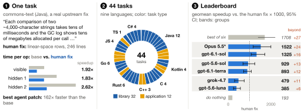

Can a coding agent make a real program faster without changing what it does?编程智能体能否在不改变行为的前提下，让真实程序更快？
Leaderboard排行榜
Score on 44 tasks = 1000 × geometric mean of the patch speedup relative to the human fix. The human fix scores 1000; failing patches count as no speedup.44 道题的分数 = 1000 × 补丁相对人类修复提速的几何平均。人类修复 = 1000；失败补丁按没有提速计。
Bars run from 0 to 2,200; the dashed mark is the human fix (1000) and the thin line is the 95% CI. Grey rows are reference points. Solved: within 5% of the human fix's log-speedup or better. Full leaderboard →柱子刻度 0–2,200；虚线为人类修复（1000），细线为 95% 置信区间；灰色行为参照点。Solved：达到人类修复 log 提速的 95% 及以上。完整排行榜 →
What the agent sees智能体看到什么
The agent gets智能体拿到
- The repository just before the upstream fix, without history上游修复之前的仓库，不含历史
- A description of the slow behaviour or symptom慢行为或症状的描述
- The project's tests and a build script项目自带测试和构建脚本
- One visible workload it can time一个可以自己计时的可见工作负载
The agent never sees智能体看不到
- The human fix, or where and how it works人类修复，以及它改在哪里、怎么改
- The 2–5 hidden workloads it is scored on用来计分的 2–5 个隐藏工作负载
- The hidden correctness checks隐藏的正确性检查
- Any later upstream commit任何后续的上游提交
Performance commits from widely used open-source projects in nine languages, with licenses that allow redistributing a patch.9 种语言里广泛使用的开源项目的性能提交，许可证允许再分发补丁。
A task is kept only if the human fix is reliably faster on two Intel machines of different generations: the bootstrap lower bound clears 1.10 on every workload.只有人类修复在两台不同代 Intel 机器上都稳定更快才收录：每个工作负载的 bootstrap 下界都超过 1.10。
Patch and human fix are timed in the same session on hidden workloads that call the changed code through the public interface and check its outputs. Gains beyond the human fix count.补丁和人类修复在同一 session、在隐藏工作负载上计时；隐藏工作负载通过公开接口调用被改动的代码并检查输出。超过人类修复的部分同样计分。
Every shortcut found, and every fast but wrong patch, became an executable check, and all models were rescored.发现的每一种捷径、每一个“快但错”的补丁，都变成了一条可执行检查，所有模型重新计分。
Score by language分语言得分
The same score, computed per language. The choice of model matters most in C, C++, C# and Kotlin.同样的分数按语言分别计算。模型选择在 C、C++、C# 和 Kotlin 上影响最大。
One task, end to end一道题的全貌
